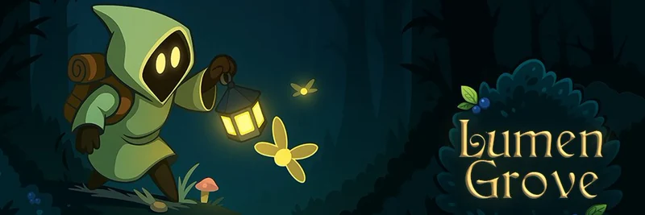
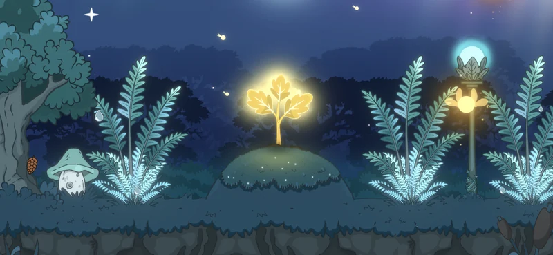
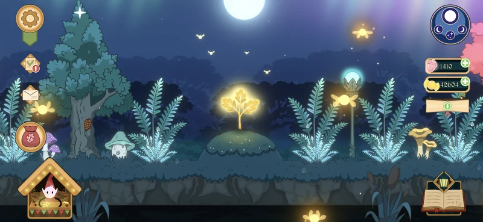
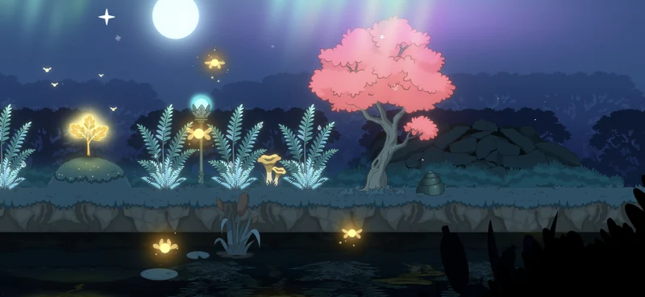

Lore
Lumen Grove — How the Enchanted Forest Grows
The story of the Enchanted Oak, its fireflies and a forest that still remembers the light.

It often happens that you set out to create one thing, and something entirely different takes shape instead, doesn't it? Yet that is not always a bad turn of events. Sometimes the thing you are working on begins to suggest what it wishes to become.
That is precisely what happened with the enchanted world of Far Far Forest.
It was meant to tell the story of a mysterious figure in a green hood, gathering fireflies and luring them with the glow of a lantern.
Yet it turned out that this creature was only one fragment of a far greater tale. To truly understand it — and to be able to retell it — there had to be a place. A kind of unifying centre for the entire narrative.
Something akin to a book's cover: the thing that gathers loose pages into a single form — not merely a tool, but a part of the story itself.

So, what is this place?
There are several ways to answer that. Within the story, it is Contra spem spero — hope against hope — in its purest form.
The last island of resistance in a world swallowed by darkness, with no reasonable chance of victory. Its inhabitants live by memories of a bygone age — a kind of golden era — whose return, objectively speaking, is impossible.
In many ways it borders on folly: a choice that clearly leads to ruin. I would not even call it hope. It is stubbornness — a refusal to accept the new order of things, even at the cost of life itself.
And yet — it is here that something extraordinary occurs. A sapling of the Enchanted Oak breaks through the soil. And that means light may yet return to Far Far Forest. But it begins here — in Lumen Grove.

So what, then, is wrong?
You may have noticed that this fairy-tale world is rather dark. Not merely because there is no sun — only the moon (yes, quite so) — but because even in a night forest, absolute darkness is not a natural state.
I would put it this way: we know a forest is alive, do we not? But here it is more than alive. Every tree, every stone, every creature is the embodiment of a spirit that has chosen its form according to its nature. Among these incarnate spirits stood the Enchanted Oak — a presence central to the balance of this world.
This golden tree was home to thousands of fireflies. They illuminated the forest and allowed it to grow in harmony. They were, in a sense, its living current — its vital light.

Alas, even in fairy tales, dark roots take hold: envy, deceit, betrayal. A single crooked tree — a small, twisted chestnut that once grew unnoticed in the thickets — made cunning use of others' kindness and clawed its way upwards.
Poisoning all around it, it strengthened. Its roots drove deeper, displacing or destroying whatever lay between it and the High Hill.
Everything changed. The Golden Streams became the Foulwaters. The Bright Groves turned into Thorned Thickets. And only shadows wander now between the trees.
The Enchanted Oak did not foresee such treachery. By the time it understood what had happened, it was already too late.
Poisoned by the waters, weakened and spent, it felt all that befell the forest through its bark, for its spirit was bound to the woodland more deeply than any other.
In the end, it could endure no more. Its branches bowed in silence, and the great trunk fell.
Now, upon the High Hill, in a suffocating gloom, towers the usurper — the Withered Chestnut.
Explore the forest.